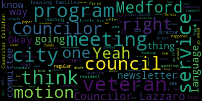
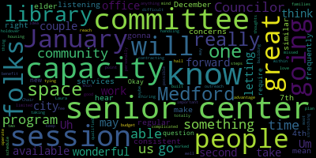

[Tseng]: Test one, two.
[Leming]: started. Welcome to the meeting of the Resident Services and Public Engagement Committee. We have three items on the agenda tonight, and we're going to take them a little bit out of order and start by looking at the resolution to allow the director of veteran services to offer housing incentives to veteran renters. We're joined here today by Teresa DuPont and Veronica Shaw to offer a bit of a recap of where this was at. This was an idea that veteran services director Shaw had in which she would have the ability to use extra funds that were allocated to the veteran's office to essentially have a voucher program for veteran renters so that landlords could get an extra bonus if they choose to rent out to veterans. We passed this by legal. It was found that it would have complications. There are complications in letting the city distribute money directly to people to interested parties. We would have to and Council told us that we would have to first go to a nonprofit and that led to a partnership that was largely initiated by the city staff with housing families. We have a memo here that housing families pass to us, which describes the outline of this program. And because it was not, I don't believe we only got this memo yesterday, so it wasn't distributed in the official agenda packet. So it's fairly, so I'm just going to read it into the public record real quick, and then I'll let Teresa and Veronica speak about it and answer any questions that we might have. The memo from housing families as follows. As a longtime community resource partner of the city of Medford, housing families help support the Medford community by providing homelessness prevention and housing services to income eligible residents. Recently, housing families was approached by the city of Medford's veteran service director, Veronica Shaw, city councilor and city councilor Matt Leming to propose a new partnership and a pilot veterans housing assistance program. The program would provide a rebate incentive to property owners in Medford. who lease their units to residents identifying themselves as active or retired service people. This program aligns with both the City of Medford and Housing Families' missions of providing housing assistance to residents. The City of Medford has already identified a funding source through the Veterans Services Office's general operating budget. This funding is required to be dispersed through an intermediary organization. Housing Families is uniquely qualified to support this program as our organization currently supports several assistance programs for Medford in the greater Boston area and are located locally in Malden. The intended program eligibility guidelines will be as follows. One head of household must be an active or retired service member as defined by Mass General Law Chapter 115. Property must be owner occupied by resident of Medford. Three, proper documentation must be submitted to verify eligibility, including but not limited to an executed lease agreement, verification of address, copy of active service documentation, or certificate of discharge as allowable by Mass General Law, Chapter 115, Section 3A, and the completed W-9 from the recipient or property owner. Four, program payments will be distributed in the form of a paper check. Five, property owners must apply for annual recertification to qualify for subsequent payments. Six applications will be received on a first come, first served and rolling basis until program funds are extinguished. Seven, any remaining funds after the annual cycles will be rolled forward to provide funding for future applicants of this program. Uh we ask that the city council offer their support of this program. Best regards, Chief Executive Officer, Housing Families further questions from my colleagues, I'll go ahead and hand it over to Teresa Dupont and Veronica Shaw so that they can speak about this and answer any questions that we might have about it. I see, Councilor, hold on, I still need to get used to leave you. Okay, I don't think it's on the weird. I actually can't see your light. It's sort of blocked by the other light. No, I mean, literally, the lamp is blocking the red thing. So I can't Yes. OK, go ahead and press it. Can you press it again? Sorry. What? This is weird. OK, now I'm seeing. OK. Yeah. OK. OK. Aha.
[Callahan]: Thank you. Who knew? Great. Mechanical failure. Did you send this out? Is there a copy? Can we see copies?
[Leming]: Yes, it was distributed by the clerk. Thank you.
[Callahan]: What's the name of the, I just don't see the, I'm looking at all of the clerk's emails right now. Is it under the newsletter draft or?
[Leming]: It should be, I distributed it.
[Hurtubise]: What's the title? Something I sent you yesterday or today.
[Callahan]: What's the title of the email?
[Leming]: News, hold on.
[Callahan]: Sorry, I can get it later, but I would like a copy.
[Leming]: Yeah, it should have been. I am searching through my email.
[Callahan]: Maybe the clerk can find out the subject and let me know.
[Hurtubise]: It was called Documents for Community.
[Callahan]: I don't see, did I get it?
[Leming]: Documents for committee meeting. It was sent to your Gmail.
[Callahan]: Oh, to my Gmail.
[Leming]: OK. Yeah. I'm looking at it right now.
[Callahan]: I think it only went to my Gmail. Thank you.
[Leming]: Yep. Yeah, so the documents for committee meeting, it should have both a copy of the Google Okay. Pending any further questions, go ahead and press the button on that. Okay. Try speaking.
[Shaw]: Good evening. Thank you for having us. I don't really have a whole lot more to add, other than I'm very grateful that we have gotten this far with this initiative. I'm looking forward to helping as many veteran families as we can. hoping that this grows. We have other cities that are looking at this, other veterans offices that are looking to see how we do this in hopes that they can expand to their communities as well. I'm going to let Teresa talk about the organization that we're working with and how that all is going to happen.
[DuPont]: Good evening, Councilors. Thank you so much for having us. I'm Teresa DuPont, CPA and Grant Manager here for the City. I've been assisting with this one as the intermediary organization who will be helping to implement the program is Housing Families, an organization that I in my CPA role work with very well and often, so we're excited that they agreed to help partner with us to implement this program, just because we already have such a great relationship with them. They're tried and true with their vetting and their eligibility intake on applications for all of their various programs. They're very diligent. They're lawyers, so they're very diligent about ensuring eligibility is accurate. I'd be happy to answer any logistical questions about how the experience would be for the landlords on the back end for applying for this.
[Leming]: pressing the next on button. I think you're can you hear me?
[Lazzaro]: Okay, great. Um, I just had a question about capacity in your office. Is there is it? Uh, new. Will it require you to take on more? Um Since it's contracting out with housing families, which I've worked with them before too, they're really wonderful, Laura's great. If they're handling this and it's their space in your budget for them to do the work, then maybe this is a moot point, but is there anything that you're going to have to be taking on that's going to be more complicated or difficult or is it good totally well within your capacity?
[DuPont]: So it's within our capacity and largely it will be fielding people probably calling our mutual offices saying, hey, I heard about this program. And we would at that point, just like we do right now with, I need rental arrears assistance, I'm moving into Medford, can you help me find those costs? We explain the program to them and then point them in the direction of our partners. So our capacity at our level is minimal. To your point about their capacity on their end, they have graciously offered to execute this as a pilot program. Should, and we hope to, grow this program, find that there's a lot of need in the community and being able to, like I said, just expand the program. At that point, we would probably have a conversation with them about can we supplement them with a little bit of administrative funds to help support the program on their end, like we do right now, again, with our homelessness prevention programs or legal services. There's a small portion of those grant awards that do go towards the actual administration of the program. So for this year, this pilot program, they're absorbing those costs because it will be pretty minimal on their end. But if all goes well, we'll give them more work to do, and then that will be something we can address with the grant award or what have you.
[Shaw]: Can I answer that? Yeah. From my end, the biggest portion will be vetting the veterans, because I have access to be able to look at their DD214s and make sure that they are classified as veterans. that way the organization will not have to do that. The veterans can come through me for that portion, for vetting. Great.
[Lazzaro]: Chair, if I may, just two thoughts I have. One is that I just know that capacity can be limited in our city hall offices in Medford, so just something I'd love to keep in mind for for us going forward. I think it's really important that we take advantage of programs like this they're really wonderful and it's a great way for us to reach out to folks who can benefit from our from programs that are available like this, but we should not be stretching our steps so thin that, you know, they can't operate. And that just means hiring and building our capacity. The second thing is, is there something built in for outreach? It's possible that I've missed it, but just letting people know about the program. Is there a plan for letting qualified folks know about it?
[DuPont]: We hadn't really kind of planned past that, but our office is, I work in the planning department and we're the kings and queens of outreach up there. So I'm sure that we can put something together to push this out on social medias. Obviously you can have literature in the veteran's office. I'm not sure if you have any other thoughts about that, but we can put something robust together to push this out.
[Shaw]: There's, I do work with a couple of real estate agents when I have veterans that are in need of VASH housing who are, one of them works, lives here in Medford and works almost exclusively with veterans. So I would use that person to Spread the word right now we're starting out small just to make sure that this is something that is needed. Well, it's definitely needed housing for veterans is needed, but it makes sure this is the program. So we're going to start small and probably just go to those few sources and then expand.
[Tseng]: Thank you. Um, I thank you for presenting today and for coming to our meeting. Um, I apologize, I was stuck on the bus, and the bus was a few minutes late. So if I ask anything that is repetitive, feel free to let me know. I wanted to say first that I'm very excited about this. I think this is what people are asking of government. They're asking for government to be more active in helping out, in making things more accessible. People face so many difficulties with being able to rent and to afford. to, you know, live in the city. And I think this is this is a very healthy step forward. And I really want to thank how proactive you all have been on putting this together. I guess some some quick questions. The $750 annually, you might have already spoken to this. How did we get to that number? Is that something that's like, a maximum by law or
[Shaw]: This is a program that, as far as I could tell, all the research I did, it's never been done here in Massachusetts. So the number, honestly, was just, if I was renting to somebody, what would make me be interested enough to rent to somebody? I wish I could give you a more scientific explanation, but that was just it, is that I wanted to come up with a number that would make it worthwhile for somebody to take a chance on a veteran.
[Tseng]: Cool. I mean, I think my, I only asked that because it seems like there's going to be an ordinance change in that. And I was, I guess, in my approach to things, it would be better if we set a higher upper bound just to give you more flexibility you need. And I, does this number give you the flexibility you think you need?
[Leming]: Actually, so I could, I could talk about that a little bit. So with regards to the ordinance change, the paper in front of you is the proposed language that originally was referred to this committee. And I was planning on talking about that a little bit after the presentation. So we would have to refer that to legal so that council can say what is the best way to frame this. I do have some proposed language and if they folks have any more input on sort of the maximum amount. That's also very, you know, we can be amenable to that at this stage as well. But what you have in front of you is just the previous paper version of this paper that was referred to committee that most definitely will have to be changed.
[Shaw]: I would also add that that the number that I came up with was based off of this budget, the money I have right now, and also based off of a small amount of landlord veteran pairings. If this program expands the way I am hoping, I definitely need to look at my budget going forward before I would even consider increasing that amount. I would love to give more, but I definitely have to look at my budget and make sure that if I have emergencies with veterans, that can be met. before I talk about.
[Tseng]: I think my perspective on it is just that I think it should be up to you to look at your budget and determine what's the appropriate amount. I think I just want to avoid a situation where we're constantly coming back to the city council and asking for language changes. So I just want to make sure that we have as much flexibility built into the legal language that we pass eventually as possible. And then my next question is, I'm reading over the housing families doc, which again very exciting. I was wondering the eligibility guidelines is that something we wrote up or is that something that housing families has provided to us.
[DuPont]: That is something that we wrote up kind of based off of other eligibility guidelines and other programs, as this is an incentive that's going to the property owner, not necessarily the tenant. There's a little bit more fun things in there, like the executed lease agreement, we want that on hand. So it's malleable, if you would like to see other criteria in there, that's certainly something we can look at, but it did come from us and blessed by housing families.
[Tseng]: Great. Um, I think the only only one I mean I haven't thought of things to add, and generally I would love, I like guidelines to be a little bit more flexible. Um, the only question is the owner occupancy requirement is, is, was there a reason behind it seems like there was there, there definitely was is that.
[Shaw]: I didn't want this money going to a corporation that didn't need it. I want it to go to Medford residents. I want this money to stay in Medford for Medford so that they can rent to Medford veterans. Didn't want it to go to a corporation that didn't need it and was gonna probably turn around and kick the veteran out. I wanted it to make sure that residents of Medford were benefiting from this.
[Tseng]: That's super helpful. And I only ask that because I think sometimes people might look at a doc like this, and these are the types of emails I get. And so when we all know the reasoning behind it, we can better explain it to our constituents. And then the last question I had, you had mentioned us asking maybe just what the back end would look like, us working with the landlords. I think that'd be very helpful for us to hear as counselors so we can explain it to people who are interested.
[DuPont]: Right, so again, it will be if somebody calls Veronica or myself and says, hey, I want to get in on this, we would point them towards housing families for their intake of the application. But I'm a landlord, and Veronica just told me to give a call to my friends at housing families, what I should expect. It's a pretty painless intake. Rental arrears and homelessness prevention those tend to be a little bit more invasive, they want your tax returns, they want your bank statements they want. you know, blood type of your firstborn, you know, it's a bit more invasive because there is such a financial element to this. And yes, it is an incentive, but it's ultimately, the goal isn't to give somebody money, it's to house veterans. So the intake portion of it will be relatively painless as compared to other intakes. We should just expect, again, those criteria there, the lease agreement, we will, If I'm a landlord, I think the one small hurdle I might run into would just be asking my tenant, who is the military service person, would you be able to provide to me your discharge paperwork, a copy of your... I foresee that being the biggest challenge there because sometimes people just... Ship's passing in the middle. But otherwise, it's pretty basic information that's being provided to housing families. Their turnaround time is usually within Depending on the severity of the situation. This isn't an emergency, I would consider it, but they typically like to turn around payments to people within a week so It's not going to get stuck up in a queue for months and months and months on end. So there. That's why we chose housing families. They are such a great expeditious partner with lots of Expertise on their team.
[Tseng]: And one, just one quick question. That's super helpful. So thank you for that explanation. My last question, I swear. Do we have any ways to measure success of the program going forward? Are we tracking anything?
[Shaw]: I think the biggest measure of success is how many veterans and landlords were able to pair. That's going to be the truest form. If we don't have any landlords and we don't have any veterans that are willing to work together, then it would not be a success.
[Tseng]: And you don't have to give us a number, but are there numbers that you have in mind of like goals? for the upcoming years? You don't have to, again, you don't have to like, we don't want to bind ourselves to any numbers, but.
[Shaw]: Yes. Yes, I have thought about it. I don't want to necessarily share them right now. I want to see how we do because I can, I would like to be able to adjust if necessary. I don't want to lock myself into something.
[Tseng]: Yeah, no, that's just super helpful because I think it's something to keep in mind as we move forward in budgeting for us to help advocate for your department come budget season, you know, to make sure you have the funds you need.
[Shaw]: Yes, absolutely. Well, and I would like this to be able to be a program that as we go, if we see issues, we can change them. If we see that we need to just tweak little things, we can do that. And to speak to Teresa's point about DD214s is that yes, veterans don't generally like to share our documents with complete strangers. because there's a lot of personal information. All of that can be funneled through my office. I have no problems being a liaison between the veteran and a landlord or the organization that's going to help us, because that is kind of a personal document and not everybody needs to see it.
[Tseng]: Thank you so much.
[Leming]: All right. Any other comments?
[DuPont]: If I can add just one more thing on that, so sorry. Part of our relationship with housing families as a granting agency is they do provide quarterly reporting to us. in the interim before the end of the program wraps up with the boat, we will be getting status reports, whether that's how many applications received as well as how many incentives handed out. So we'll have some hard data that we can share.
[Leming]: Councilor Callahan, wait. Next on, I keep pressing the next on, I'm not sure what, okay. Mic on.
[Callahan]: second. Now it's on. Thanks for your work. I'm really impressed with, you know, initiating the program, having the ideas, then finding out it's not gonna work the way you think, and then finding a way to make it work. So that's excellent. I will say I am very excited about the owner occupied. I think that's exactly the way that we want to do it. And I, it seems like we're all on the same page. But I wanted to informally ask that you might come back to this committee in a year and just give us an update. Perfect. Thanks.
[Leming]: All right, thank you. So with just a couple of logistical things related to this, I'm going to share my screen really quick here. All right, so in order to do this, what you have in front of you is an additional authority added under the Director of Veterans Services. The draft language was what I originally penned under the assumption that the veteran service director could do this independently. Obviously, they cannot. And so what I would propose is to replace that language with the following, which says the director of veteran services shall at their discretion and his funds are available. have the authority to partner with a nonprofit organization which may offer cash incentives of up to $750 annually to landlords who offer rental housing to veterans. I think that the best way forward is to first discuss this language, pass it to legal counsel, and then simultaneously pass this package to the regular meeting. to a regular council meeting, and then once we have feedback from legal, revise the language there in accordance with whatever the recommendations might be, if they have any better way to phrase this than what I came up with. Oh, Councilor Callahan.
[Callahan]: I'm still on, how nice, how convenient. Given Councilor Tseng's suggestion, I wonder if there is a way to not tie it to $750. I wonder how we can, if there's a way to sort of craft some language that isn't gonna require us every couple of years to be like, well, that's not 750.
[Leming]: We could potentially move it to the fee schedule. That could be a solution to it so that it is, updated automatically, that could be one solution. But I think that either way, this language is going to have to go by council. And so I am comfortable referring this to a regular council meeting and then doing a little bit more research and potentially revising this to go into the fee schedule, for instance, and then voting on it there. Council Lazzaro.
[Lazzaro]: I do like the idea of tying it to the fee schedule, personally.
[Leming]: That being said, do we have a motion on the floor to refer this to regular council and legal?
[Lazzaro]: Second.
[Leming]: On the motion by Councilor Callahan, seconded by Councilor Lazzaro. All those in favor? Aye. All those opposed? Motion passes. Thank you both very much for your work on this. And we will likely be looking at it at the next regular meeting. Moving on, the city council newsletter. I apologize for the last minute nature that we've been sending these things out at. We're sort of doing a rotating schedule whereby different councillors draft different portions of the newsletter. But in that latest email, you should have a link to this Google Doc here, which contains the draft of Councilor Collins, as well as a couple of points that I added from late October, which events that occurred after our last meeting. Now, Councilor Collins version of the newsletter actually does contain a couple of points that we are going to discuss in the meeting literally right after this, which I don't think has been done in a newsletter previously. So I do think that news, personally, that newsletters should report things that have already happened. But one way to get around this is to potentially approve this language contingent on what happens in the next meeting. And then if we do, in fact, pass those, I could, with the permission of this committee, while formatting the newsletter, just change everything to the past tense. Because when we're reporting things out, I think I would rather have more current events happen instead of waiting a month before we tell people what happened in a committee meeting that's happening today. So that could be one way to write this, even though, technically, we're, as of this moment, the things discussed in this newsletter haven't happened yet. But that being said, Councilor Callahan, I can see that your mic is still on, so I'm not.
[Tseng]: Charlie, that's what I was going to say.
[Leming]: Okay, cool. Um, do we have any other specific suggestions to the content of the newsletter as it stands in this this Google document? Councilor Tseng?
[Tseng]: Honestly, I'm not really, um, I think most of it looks good as is, if anything, it might be a little too long. Um, but the only real content change suggestion that I had was to write out Medford Public Schools in the first paragraph. Just because some folks might not know what MTS is.
[Leming]: That's very reasonable. Councilor Lazzaro.
[Lazzaro]: There are just a couple of, this may just be a holdover, but the Administration Finance Committee, Governance Committee just have like blank, a couple of them.
[Leming]: Yeah, that's from my draft. So I just keep those there for consistency's sake, but those wouldn't be in the formatted version. I could even just delete those now for clarity. Great. Do we have any other comments? Give folks a moment to go through it before we take any motions on this. Councilor Lazzaro.
[Lazzaro]: When we're ready, I'm happy to motion to move this to the regular committee or no, we don't do that.
[Leming]: No, no. So I think I think in this case, the motion would be specifically to approve it contingent upon the what is voted on in the next meeting.
[Lazzaro]: Approve a contingent upon what is voted on in the next meeting.
[Leming]: On the motion by Councilor Lazzaro, seconded by Councilor Callahan. All those in favor? All those opposed? Motion passes. And the very last item on the agenda is just a brief update on what's going on with the City Council listening sessions. So I know that there has been a little bit of behind the scenes activity, mainly because these listening sessions just require counselors kind of running around and trying to coordinate with different groups, get something on the calendar. But I'm just going to go ahead and give the opportunity to counselors Lazzaro and Callahan, who I know have been working on some of these initiatives as well. So whoever would like to go first, counselor Lazzaro.
[Lazzaro]: Thank you. We I've been communicating with Pamela Kelly of the senior center. She has a title, elder services, director of elder services. And we set up a time, consistent time to hold a listening session at the senior center in Medford. I'm going to host that the first time, but we'll have a rotating, hopefully other counselors can rotate in. and we'll have it be a consistent, ongoing session. So it's gonna be Thursdays at noon once a month, starting in January at the end of January, January 30th. So that should be a great opportunity to hear from our local seniors and make sure that folks are used to seeing city council members there at the senior center available to hear concerns and, you know, bring those concerns back to our committee. Uh, as as we're able and looking forward to getting started with that, and we're gonna be able to put it in the senior center newsletter, so people will be aware of it leading up.
[Leming]: Great. Wonderful. Council call him.
[Callahan]: Yeah, so this is a little bit of an update. I know when we first drafted the, I think we came up with nine different ones we were hoping to do, you know, this year or so, we wanted to take advantage of our community liaisons. So we split those up. I have a couple of reports back from those that will be upcoming. Hopefully, we also can move. I think the senior center is fantastic. We also had, I think, tough students in the high school. And I would love for us to, at some point in the new year, to start doing things at each of the schools for parents of the schools. I think that's a great way. And there's other ways for us to really get into the community. I think getting out of this chamber and getting into places where folks who maybe don't come to this room able to hear from more folks. So my two updates are that this Saturday through the um, Arab speaking, uh, liaison. Uh, we're gonna do one at the library. So that's coming up Saturday at noon. And then, um, we have two potential dates for doing one through, uh, Stacey Moore, and we decided to do it at the West Medford Community Center. Um, and the two potential dates for that are, um, Saturday, December 7th at 10 or 10.30 a.m., and Saturday, January 4th at 10 or 10.30 a.m. So we can pick either one of those, and then I can get back to her.
[Leming]: Great. Well, I am very, very glad to hear that these, these issues are happening and we are actively reaching out to members of the community that, again, like you're saying, normally do not come into these chambers. And I'm looking forward to the reports of the listening sessions that have happened and just a brief outline of some of the feedback that we've gotten there. Just, yeah. So thank you all very much for your wonderful work on this. Councilor Callahan. it.
[Callahan]: Sorry. Thank you. Um, I would like us to choose now, like sure.
[Leming]: All right, so the one for the Arab.
[Tseng]: Oh, I was just gonna give my preference. Oh, Councilor Tseng. I would prefer the 7th of December, just because I know I'll be here, and I think I might have some family obligations around the New Year's. But I know there are more councilors who might be able to attend, so. Yeah.
[Leming]: Councilor Lazzaro.
[Lazzaro]: I will be with Councilor Callahan at the library on Saturday for the Arab American liaison listening session, but I can't be there on the 7th of December so I but I would also be fine with like seating that to another Councilor if I could do the 4th, January 4th. So, you know, it's kind of like these sessions aren't meant to be too many. Honestly, if there were three of us, there would be a quorum of this committee and we wouldn't be able to do it. So that's sort of the conundrum, right? So I would say probably December 7th would work for the West Medford Community Center if you wanted to do that one. Right. Makes sense to me.
[Leming]: Great, I don't think we, do we necessarily have to take a vote on that one? No, yeah, okay, cool. All right, great, sounds good. Wonderful, all right, is there, all right, is there any public participation? I'm not seeing. Anybody bite on zoom or in the chambers, see that Teresa's knitting over there. So, oh, Councilor Callahan.
[Callahan]: Thank you. We have a few minutes. I know I mentioned, you know, maybe doing some at the schools. I also thought just thought we could have like a couple minutes of brainstorm since we're nearing the end of the year. But, you know, I think for parents at the schools, you know, one each at each school might be nice. What do you think of maybe looking at where the lower income Medford residents are and trying to do like neighborhood ones where we flyer? Just trying to think of like, how can we reach the folks who are like, likely to come here that we don't often hear from and that we would really like to make sure that they're doing okay.
[Leming]: I feel like accessing these groups is sometimes it's a matter of personal connections and trying to communicate with folks who you know might have those connections. I know a couple of parents who might be able to tap into their parental networks to figure that particular one out. So that could be one. I mean, that could be something to pursue in January. In terms of students, because that was another one on our list, my thoughts on that would be you'd really have to get more formal, sort of a more formal, lines for that, like probably reaching out to the principal of Medford High to see if they're okay with it, or reaching out to student government. So in that case, I would imagine that Yeah, in that case, you definitely need to have a slightly more formal. And then there's also just different community centers and social centers around the city, which is where the senior center idea comes from. I know I was thinking through reaching out to groups of veterans, in which case the VFW would be a good solution for that, a good way to address that. But yeah, I also think that we did kind of have a bit of a lull in scheduling these listening sessions over the summer because when we were scheduling our ambitious schedule, we didn't understand that it was the summer. And nobody was really around. So that's just something that happens. But I'm glad to see that they're picking up now. And I think that, you know, when Councilor Lazzaro and I were brainstorming, we're like thinking of the regular sessions at the senior center. The logic behind that was that it is an easy kind of like it is an easy month by month thing where we can put as little brain power as possible into reaching out and scheduling to a new group. So that's just a way to sort of keep it going. Councilor Lazzaro.
[Lazzaro]: I also think that the library, though I mean we're already doing some targeted sessions at the library but it being a space that people with young kids before they go to school, meet frequently. people, low income folks who don't have somewhere to hang out during the day will frequently go, especially when it's cold out. It tends to be a gathering space for the community. Lots of different groups in the community can be, if we had capacity similar to what we're doing at the senior center, to go consistently to the library in one of the rooms and we could advertise on a regular basis, that might be something that we could do similar to what we're doing at the senior center.
[Callahan]: Thank you.
[Leming]: Thank you. Do we have any motions on the floor? Do we have a second?
[Hurtubise]: Second.
[Leming]: On the motion to adjourn by Councilor Tseng. That was Councilor Tseng, right? Okay, seconded by Councilor Lazzaro. All those in favor? Aye. All those opposed? Motion passes. Meeting is adjourned. Thank you, everybody.
|
total time: 4.37 minutes total words: 746 |
total time: 17.87 minutes total words: 2357  |
total time: 3.89 minutes total words: 653 |
total time: 4.53 minutes total words: 733  |
{kind=link}
{kind=link}
{kind=link}
{kind=link}